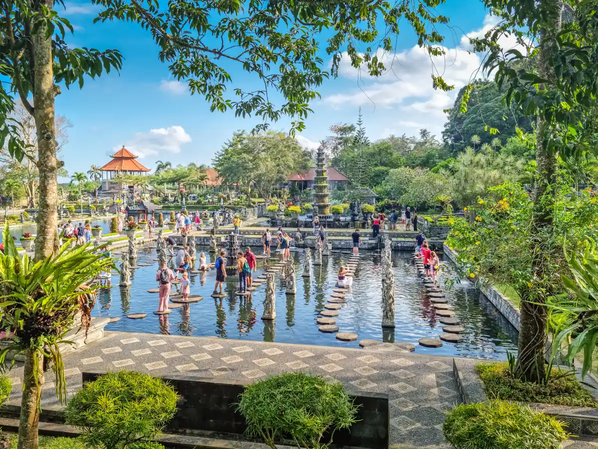
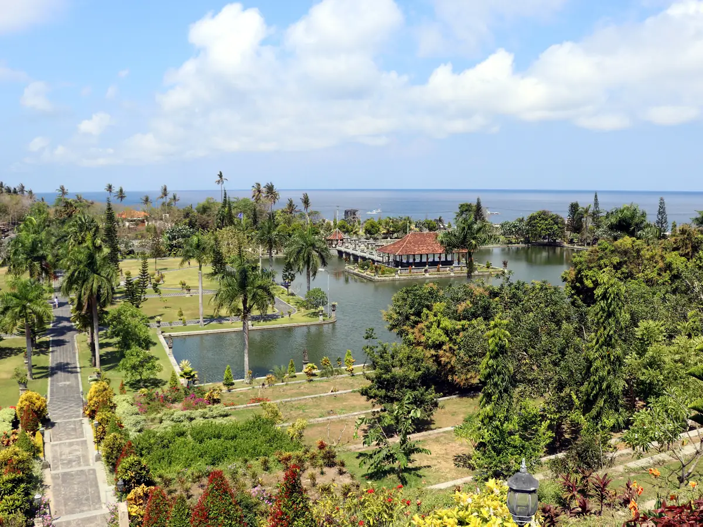

What You'll Do

Lempuyang Temple - Gates of Heaven
Bali's most photographed split gate, framing Mount Agung on a clear morning. We arrive early to beat the queue and handle the ticket, sarong, and the famous mirror photo so you don't waste half the day waiting in line.

Tirta Gangga Water Garden
A former royal garden built around tiered fountains and koi-filled pools, with stepping stones you can walk across the water on. Peaceful, green, and endlessly photogenic - one of East Bali's most underrated stops.

Taman Ujung Water Palace
The grand water palace of the Karangasem royal family - a spread of reflecting ponds, ornate bridges, and hillside pavilions framed by Mount Agung and the sea. Elegant, photogenic, and an easy stroll - a perfect pairing with Tirta Gangga.

Besakih - The Mother Temple
Bali's largest and holiest temple complex, built in terraces up the slope of Mount Agung. More than 20 temples in one sanctuary, still the spiritual centre of the island after a thousand years. Sarong included.